Learning Outcomes
- Verify Ohm’s law from measured voltage and current.
- Calculate resistor power using equivalent expressions.
- Measure and calculate equivalent resistance for parallel, series, bridge, and ladder networks.
Lab 02
Verify the voltage-current relationship, measure resistor power, and compare calculated equivalent resistance with a safe DMM measurement.
Check these points before energizing or measuring a circuit.
Use these visual checks before completing the practical tasks.
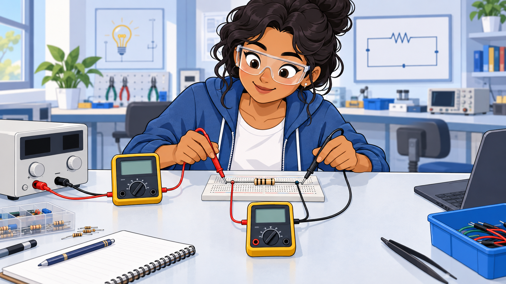
Break the current path and insert the ammeter in series. Place the voltmeter probes across the two resistor terminals.
Never connect the ammeter directly across the source.
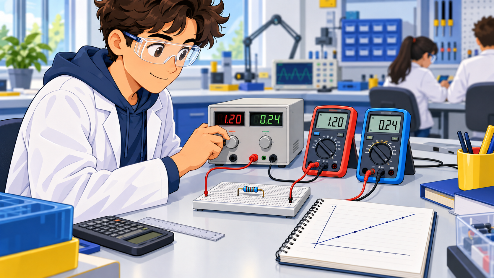
Set a safe source voltage, measure the resistor voltage and current, calculate current from I = V/R, then compare both values.
A constant resistor gives an approximately straight V-I graph.
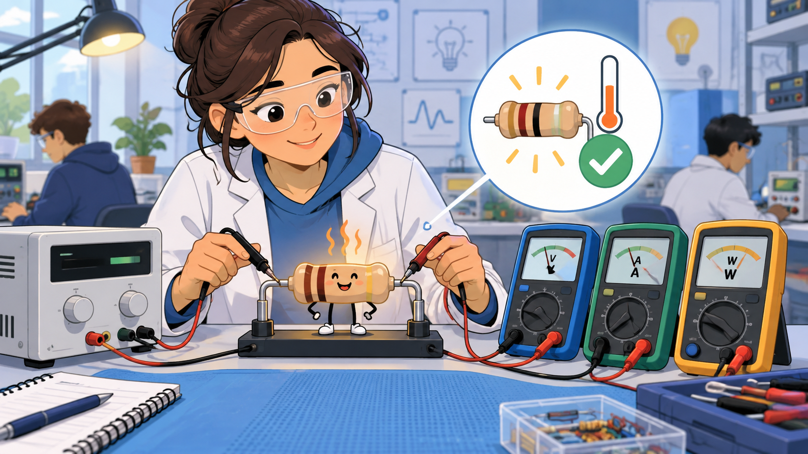
Use the measured voltage and current for P = VI, then cross-check using the other two forms.
Keep calculated power safely below the resistor’s rated power.
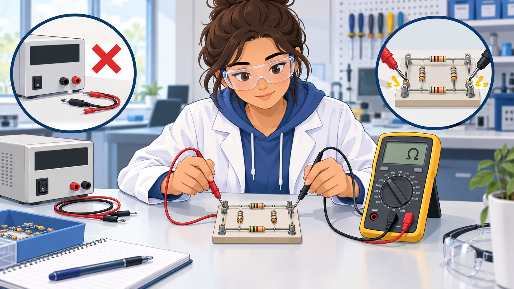
Switch off and disconnect the supply, select Ω mode, then place the DMM across terminals A and B.
An energized circuit can damage the meter and invalidate the reading.
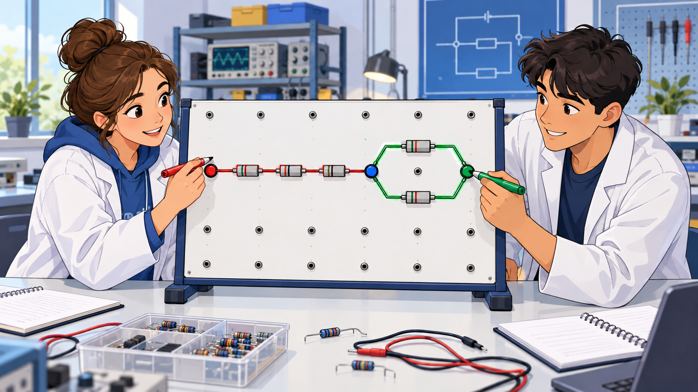
Series elements share one unbranched current path. Parallel elements connect between the same two nodes.
Trace nodes, not the visual shape of the wires.
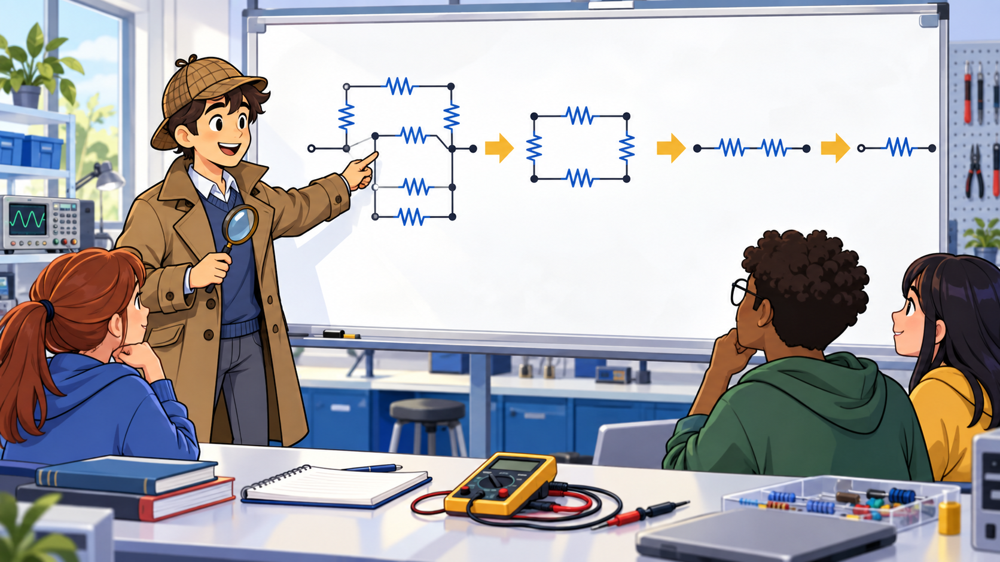
Mark the measurement terminals, identify one definite series or parallel group, replace it by its equivalent, redraw, and repeat.
Do not combine components merely because they appear next to each other.
Use one 1 kΩ resistor. Determine its nominal value and tolerance from the colour bands, then measure its resistance with the circuit de-energized.
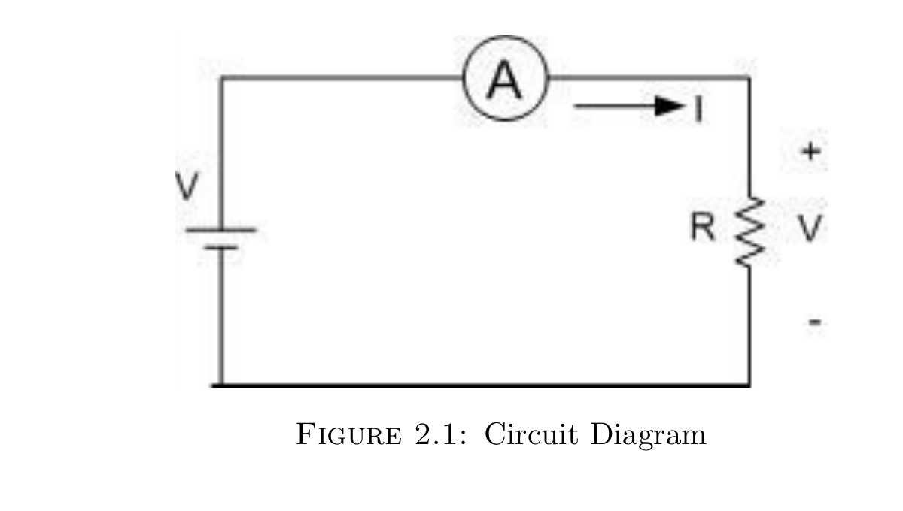
Record on paper only. Blank cells are intentionally non-interactive.
| Trial | VR | Iobs | R = VR / Iobs |
|---|---|---|---|
| 1 | |||
| 2 | |||
| 3 | |||
| 4 | |||
| 5 |
Build the two-stage resistor network, measure voltage and current for each resistor, and calculate its power.
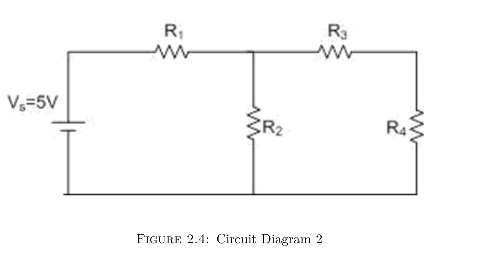
| Resistor | Nominal R | Voltage | Current | Calculated Power, P = VI | Power Rating |
|---|---|---|---|---|---|
| R1 | |||||
| R2 | |||||
| R3 | |||||
| R4 |
Connect three resistors between the same two nodes. Calculate and measure the resistance seen between A and B.
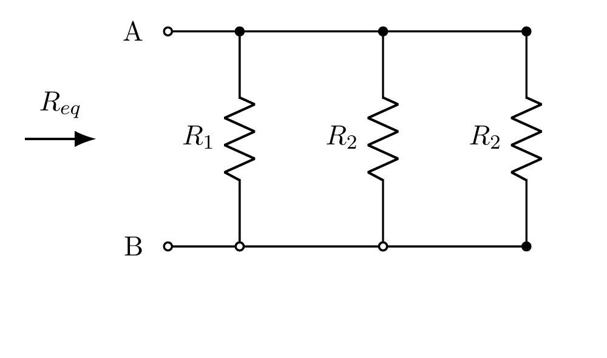
Connect three resistors end-to-end in one unbranched path. Calculate and measure the resistance seen between A and B.
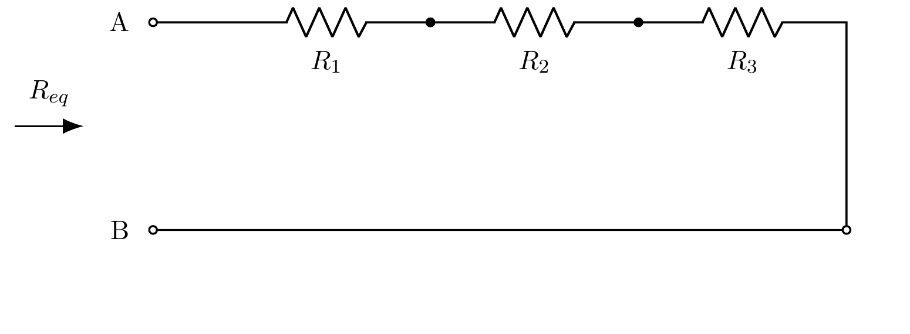
Select 1kΩ for R1-R8. Work from the rightmost branch toward terminals A and B, then confirm the equivalent resistance with the DMM.
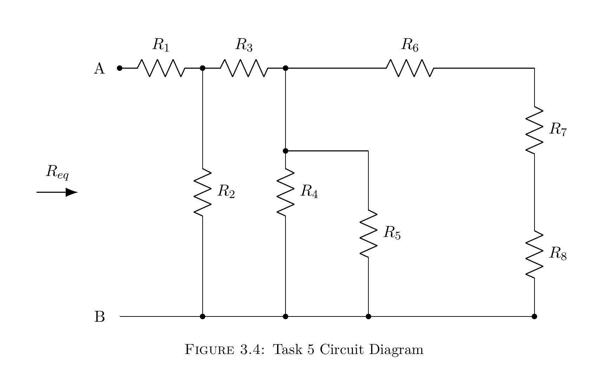